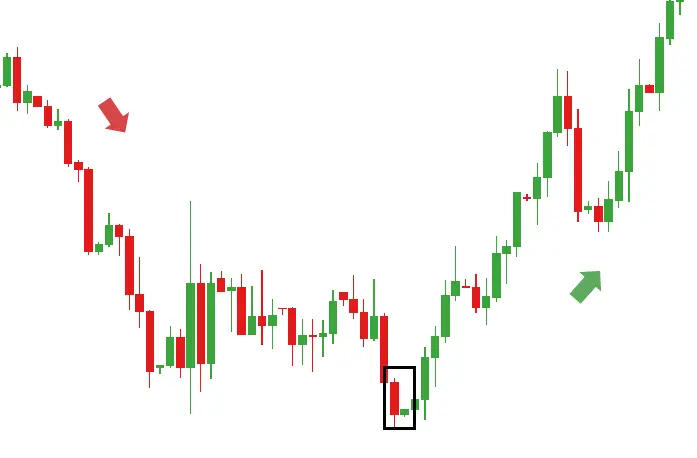

A Bullish Harami candlestick is formed when a large bearish red candle appears on Day 1 that is followed by a smaller bearish candle on the next day.
One should note that the important aspect of the bullish Harami is that prices should gap up on Day 2.
The price is held up by the buyers and is unable to fall to the bearish close of Day 1.
| Formation: |
Here is the formation of Bullish Harami candlestick Pattern:

| Formation of the Bullish Harami Pattern in the Forex market |
The forex market operates on a 24/5 basis which means when one candle closes, another opens at virtually the same level of the previous candle’s closing price. This is often observed under normal market conditions but can change during periods of high volatility. The Bullish Harami pattern in forex will often look something like this:

The small green candle opens at the same level that the prior bearish candle closed at. This is typically observed in the forex market.
| Formation of the Bullish Harami Pattern on Stock Charts |
Stocks on the other hand, have specified trading hours during the day and are known to gap at the open for many reasons. Some of those might be:
Therefore, the traditional Harami pattern appears, as seen below for Societe General (GLE FP) which trades on the CAC 40:

Notice how there are numerous areas on the chart where the market has gapped - showing wide open spaces between candles. This is often observed in the stock market.
| HOW TO TRADE THE BULLISH HARAMI CANDLESTICK PATTERN |
Traders can adopt the Bullish Harami using the five-step checklist mentioned earlier in the article. Looking at the below chart on GBP/USD we can observe the following
Stops can be placed below the new low and traders can enter at the open of the candle following the completion of the Bullish Harami pattern. Since the Bullish Harami appears at the start of a potential uptrend, traders can include multiple target levels to ride out a new extended uptrend. These targets can be placed at recent levels of support and resistance.
Therefore, the traditional Harami pattern appears, as seen below for Societe General (GLE FP) which trades on the CAC 40:

